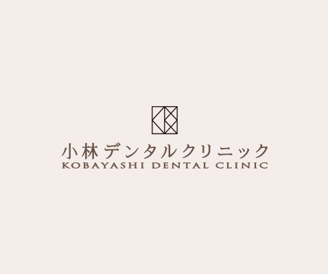

- ホーム
- インプラント
インプラント治療implant
インプラントとは？

インプラントは、何らかの理由で歯を失ったケース、あるいは抜歯予定のケースに適応される補綴治療です。顎の骨にチタン製のネジを埋め込んで、人工歯根とします。それを土台に人工歯である上部構造を装着して、天然歯に限りなく近い審美性、機能性、耐久性を再現する治療法です。
歯を残せるのであれば保存に努めます

インプラントは、失った歯を補うための治療法です。虫歯や歯周病、外傷などによって、もうすでに歯を喪失している状態であれば、インプラントをおすすめできますが、保存の道が残されているのであれば話は変わります。なぜなら、インプラントといえども、天然歯にはかなわないからです。実際、根管治療や歯周病治療を実施することで、歯を残せるケースは多いため、精密な検査を行った上で、正確に診断する必要があります。その上で、歯を残す道を模索できるのであれば、インプラント以外の治療法をおすすめすることがあるかもしれませんので、その点はご理解ください。
インプラントが不安な方もご安心ください

人工歯根を埋め込む手術が怖い、不安という方には、静脈内鎮静法（セデーション）をご案内しております。静脈内鎮静法とは、点滴によって鎮静薬を投与する方法で、薬剤の効果があらわれると、ウトウトと眠っているような状態になります。意識が明確になる頃には外科手術も終わっているため、手術に対する不安や恐怖心、緊張を感じることもありません。リラックスした状況で無痛状態を作り出せる、素晴らしい麻酔法です。
高い技術で多くの症例に対応
インプラント治療が一般的なクリニックで行われるようになって久しいですが、今でも骨が足りない、欠損が大きすぎるといった理由で、その他の治療法を提案されるケースがあります。それでもなお、インプラント治療を希望する場合は、大学病院などの大きな医療施設を紹介されることでしょう。

その点、当院であれば、インプラント治療に注力してきた経験から、他院で適応困難と診断された症例においても、対応できることがあるかもしれません。大阪大学のインプラントに携わる先生と連携をとり、大学病院水準の治療を提供いたします。
インプラントトラブルにも対応します

インプラント治療を他院で受けて、さまざまなトラブルを抱えている方は少なくありません。インプラント周囲炎に始まり、上部構造の破損、スクリューの緩みなど、インプラントトラブルは多岐にわたります。そうした不具合を放置すると、より深刻な事態を招きかねないため、早急に対処することを推奨します。これまで多くのインプラント治療に携わってきた当院であれば、さまざまなトラブルに対応できますので、まずはお気軽にご相談ください。